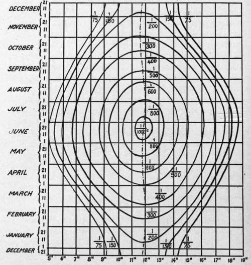

Estimation Of Exposure
Description
This section is from the book "Airplane Photography", by Herbert E. Ives. Also available from Amazon: Airplane photography.
Estimation Of Exposure
According to the foregoing argument the problem of estimating an aerial exposure resolves itself largely into one of deciding how short this may be made. Or, if the light is strong, whether it is sufficient so that a filter may be introduced without demanding more than the ycTo second or thereabouts which is dictated by the motion of the plane.
Deciding upon exposures in the field has been largely a matter of experience and judgment. A majority of the cameras in use during the war were not furnished with shutters calibrated in definite speeds. Consequently, the sergeant upon whom the decision usually devolved became a storehouse of knowledge as to the slit widths and tensions appropriate to each individual camera. This knowledge had to be acquired from the results of actual photographic reconnaissances, or from special test flights, both of them wasteful methods. But the chief objection to this state of affairs lies in the fact that the knowledge thus acquired is of no use to anyone else, nor is it applicable to other types of camera.
The first essential to placing exposure estimation upon a sound basis is therefore an accurate knowledge of shutter performances. Either the shutter speeds should be placed upon the camera by the manufacturer and periodically checked, or a regular practice should be followed of calibrating shutters, either at a base laboratory or even in the field.
Assuming that the speeds of all shutters are accurately known, the process of estimating the requisite exposure becomes less a matter of mere guesswork and more nearly a matter of precision. For this purpose data on the variation of light intensity during the day and during the year (Figs. 101 and 102) should be taken as a guide. These data refer of course to visual and not to photographic light, but since it is always necessary to use color filters, which make the active light of approximately visual quality, this is no valid objection. The effects of clouds and mist must of course be learned largely by experience, but with the above daylight data at hand, anyone in possession of definite information on the correct exposure with a given plate for a known day and hour need not go far wrong in estimating exposures at any other time in definite fractions of a second.
Exposure Data Charts
Fig. 109 shows a chart, prepared in the French service, indicating aerial exposures for all hours of the day throughout the year. These are for clear sunlight, for a lens of aperture F/5.6 and for "ortho" plates without a filter. They are based on what is probably an over-estimate of the actual speeds given by the French shutters. For "light" clouds the exposures are to be doubled, for "heavy" clouds quadrupled, and for forests and dark ground "lengthened." Charts of this form should be extremely useful, but they were actually not of great service because of the prevalent lack of knowledge of true shutter speeds.
Fig. 109. - Chart showing aerial exposures for all times of the day and year. Data on basis of F/5.6 lens, Jougla orthochromatic plate, and clear sunlight, no filter. Exposures to be doubled and tripled for overcast and cloudy weather.
Exposure Meters
Aerial photography offers an excellent opportunity for the use of exposure meters, particularly those of the type in which a sensitive surface is exposed to the light for a measured time sufficient to darken a predetermined amount. The sensitive paper of the meter may either be exposed from the ground to the direct light of sun and sky, or from the plane to the light reflected from the ground. The first method will give figures subject to some correction for the character of the ground to be photographed—whether fields, forests, or snow. The second method is to be preferred where the shutter speed can be adjusted in the air, according to the indications of the meter, or where the filter can be selected and put in place during flight. Trials with a commercial Wynne exposure meter, used in the latter manner, give as a working figure an exposure of .001 second for each seconds taken to darken the sensitometer strip to match the darker comparison patch. This relation applies to a lens of aperture F/4.5, on Cramer Commercial Isonon plates without filter.
Continue to:
Tags
camera, lens, airplane, aerial, film, exposure, photography, maps, birdseye